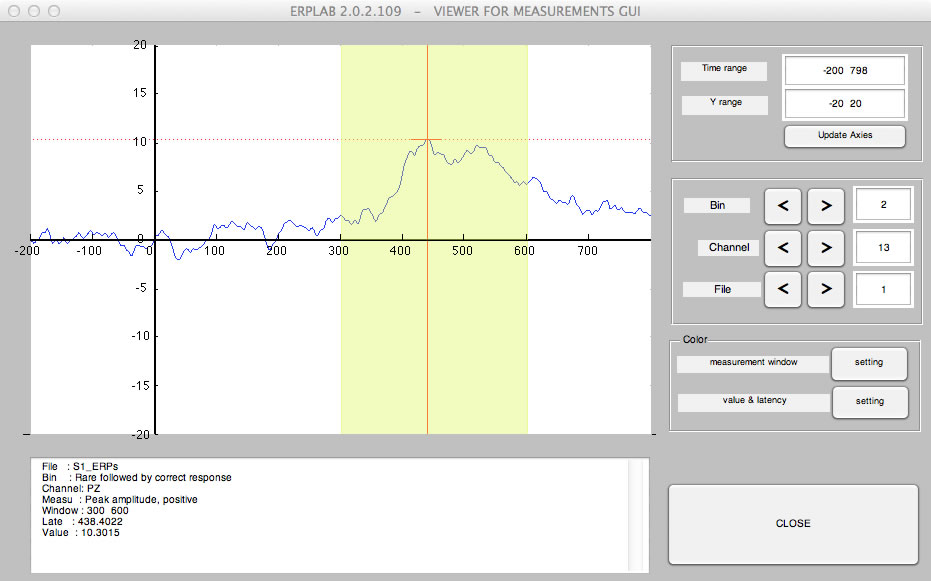
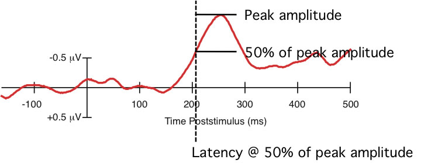

ERPLAB > ERP Measurement Tool is used to measure features of the ERP waveforms, such as amplitudes and latencies.
The basic idea behind this tool is that you specify a set of ERPsets, a set of bins, a set of channels, and a specific measurement to be performed (e.g., peak latency between 300 and 600 ms), and then the tool performs all of the measurements and saves them in a text file. You can either specify ERPsets that have been loaded into ERPLAB (and are therefore visible in the ERPsets menu) or ERPsets that have been stored in files on disk. To make it easy to repeatedly measure the same set of files, you can save a list of the files and then load it again later. The GUI is shown in the screenshot below.
The measurement tool includes a Viewer button near the bottom. This allows you to view each waveform along with measurement information. We strongly encourage you to look at all your measurements to make sure that everything is OK. You may be surprised at the degree of subject-to-subject variability in the waveforms. Here's what it looks like for peak amplitude measurements with the parameters shown in the screenshot above.

The usual approach should be to set the measurement parameters (e.g., latency window, files to measure, etc.) and then click the VIEWER button to see the measures. You can use the arrow buttons in the viewer to step through each combination of bins, channels, and files. When you have finished viewing the measures, you click the CLOSE button, which brings you back to the main measurement window. If you're satisfied with the parameters, you can click RUN to save the measures to a text file. You can then import this file into your favorite statistical analysis system.
When you save the measured values to a text file, you can choose between two different file formats (see details below). The two formats are:
For some technical details about how the time windows for measurement are specified, click here.
Several different types of values can be measured:
Instantaneous amplitude
This simply measures the amplitude at one latency (a single latency is specified in the latency text box).
Peak amplitude or latency
This finds the most positive or most negative amplitude within a specified time range (the starting and ending latencies of the time range are specified in the latency text box). The amplitude and/or latency of this peak is provided in the output file. If the number of points for the local peak option is nonzero, a peak is defined as the most positive or most negative value that is also (a) larger than the voltages in the one sample on either side of the peak, and (b) larger than the average of the N sample points on left side of the peak, and (c) larger than the average of the N sample points on the right side of the peak (where N is the value you specify in the GUI). If there is no point that meets this definition, then a warning message is printed in the command window and the simple peak (the most positive or negative point) or NaN is printed (depending on what is specified in the pull-down menu for If no local peak is found in a given waveform). Note that this requires that the N sample points actually exist. If, for example, you ask for the local peak amplitude between 300 and 900 ms, with N set at 10, then the epoch length must be at least 10 sample points longer than 900 ms. Note: We strongly recommend that you use the local peak option; if you do, the Method section of your journal articles should indicate that you measured "local peak amplitude" or "local peak latency" (and not just "peak amplitude" and "peak amplitude").
Mean amplitude
This computes mean voltage within a specified time range (the starting and ending latencies of the time range are specified in the latency text box).
Integral and area amplitude
ERPLAB provides several options for computing what is often called "area amplitude," and to understand them you must first understand some terminology. Technically, the term "area" refers to the geometric shapes created by the boundary of the waveform and the zero line. Area can never be negative. When you want to allow the regions below the zero line to be considered negative, such that positive and negative regions will cancel each other, you will be measuring the "integral" of the waveform (over some time range). The area is equivalent to taking the absolute value of each point (i.e., "rectifying" the waveform) and then computing the integral.
When ERPLAB measures areas and integrals, it does so by treating each sample point as a rectangle that is one sample period wide and computing the area or integral numerically (as opposed to computing the values analytically by fitting a continuous function to the data).
The integral or area is measured between two fixed time points that you specify. You have 4 options for exactly what will be measured:
Because area has a height (µV) and a width (seconds), the values from this routine are in units of µVs (microvolt seconds). That is, a 1 µV value over a 1 second period would have an area of 1.0 µVs, and a 1 µV value over a100-ms period would have an area of 0.1 µVs.
Fractional area latency
This routine provides a measure of latency by finding the point that dividing the area under the curve into specific fractions. For example, if you want to find the midpoint of a component, you could do this by finding the point that divides the area under the curve into two equal regions, as in the example below. This would be the "50% area latency" measure, and it works extremely well on large components like the P3 wave or on components that have been isolated by means of difference waves (see, e.g., Kiesel et al., 2008, Psychophysiology; Luck & Hillyard, 1990, Perception & Psychophysics; Luck, 1998, Psychological Science).
The same approach can be used to assess the onset or offset of a waveform. To estimate the onset, you could find something like the 15% area latency (the point at which 15% of the area is to the left of the point and 85% of the area is to the right). To estimate the offset, you could find something like the 85% area latency. The same four options that are available for using area/integral to measure amplitude are available for measuring fractional area amplitude.
Fractional peak latency
This routine provides a measure of onset latency by finding the peak amplitude and working backward in the waveform until the amplitude reaches a specified fraction of the peak amplitude. For example, the figure below shows how the 50% peak latency is computed by finding the peak amplitude and then working backward until the voltage reaches 50% of this peak voltage. As in other peak measures, you can have it find a local peak amplitude rather than the absolute peak, and work backward to the point that is the requested fraction of the local peak amplitude. In many cases, this is the optimal method for computing onset latency (see, e.g., Kiesel et al., 2008, Psychophysiology; Luck et al., 2009, Psychophysiology).

Saving the measurements
The measured values are stored in a text file, which you can import into the statistical analysis package of your choice. There are two output formats. In the first (One ERPset per line (wide format)), each line contains the data from every requested bin and channel from a given ERPset. Ordinarily, each ERPset will contain the data from one subject, so the result contains one line for each subject, as shown here:
ERPset Frequent_FZ Frequent_CZ Frequent _PZ Rare_FZ Rare_CZ Rare_PZ
S1 2.265 4.173 4.352 4.300 10.754 9.814
S2 1.776 4.027 4.175 3.914 10.029 9.268
S3 2.265 4.173 4.352 4.300 10.754 9.814
In this example, peak amplitude was measured from two bins ("Frequent" and "Rare") and three channels (Fz, Cz, and Pz). The data from each subject (S1, S2, and S3) appears on a separate line, and each column represents the measurement from a particular channel in a particular bin. This format is useful for most statistics programs, such as SPSS.
The second output format (One measurement per line (long format)) provides one measurement per line, along with various pieces of information that can be used for sorting. This format is ideal for using the pivot table feature of Excel. Here are the same data as in the previous example but shown in this alternative format:
ERPset bin channel value
S1 1 1 2.265
S1 1 2 4.173
S1 1 3 4.352
S1 2 1 4.300
S1 2 2 10.754
S1 2 3 9.814
S2 1 1 1.776
S2 1 2 4.027
S2 1 3 4.175
S2 2 1 3.914
S2 2 2 10.029
S2 2 3 9.268
S3 1 1 2.265
S3 1 2 4.173
S3 1 3 4.352
S3 2 1 4.300
S3 2 2 10.754
S3 2 3 9.814
The values can also be stored in the Matlab workspace in the variable ERP_MEASURES. You can see them by simply typing ERP_MEASURES at the Matlab command line, yielding an output that looks like this:
>> ERP_MEASURES
ERP_MEASURES(:,:,1) =
2.2648 4.1730 4.3524
4.2995 10.7537 9.8138
ERP_MEASURES(:,:,2) =
1.7761 4.0267 4.1753
3.9139 10.0288 9.2685
ERP_MEASURES(:,:,3) =
2.2648 4.1730 4.3524
4.2995 10.7537 9.8138
| <<Averaging Across ERPsets | Table of Contents |